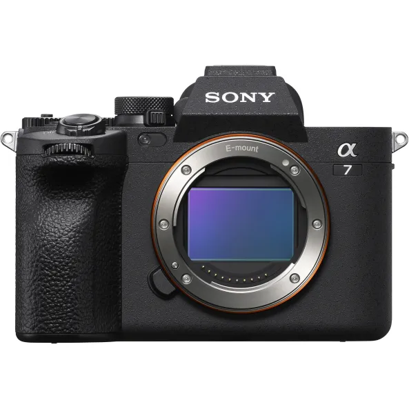

An all-arounder that pushes beyond basic, the Sony a7 IV does double duty with strong stills and video performance. An advanced hybrid mirrorless camera, the a7
IV has the resolution and AF performance that appeals to photographers along with robust 4K 60p video recording for filmmakers and content creators.
